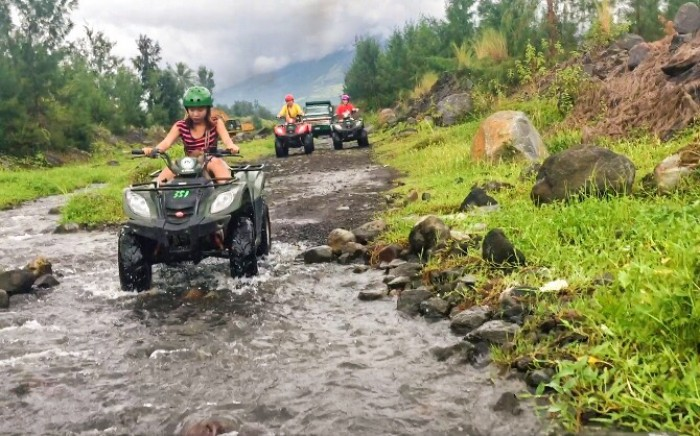
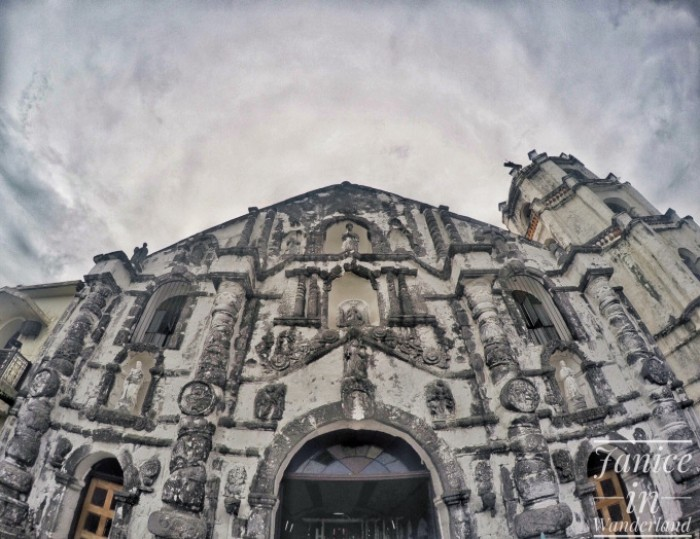
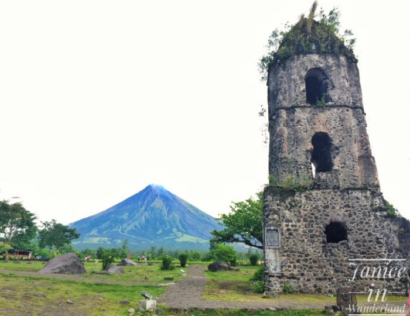
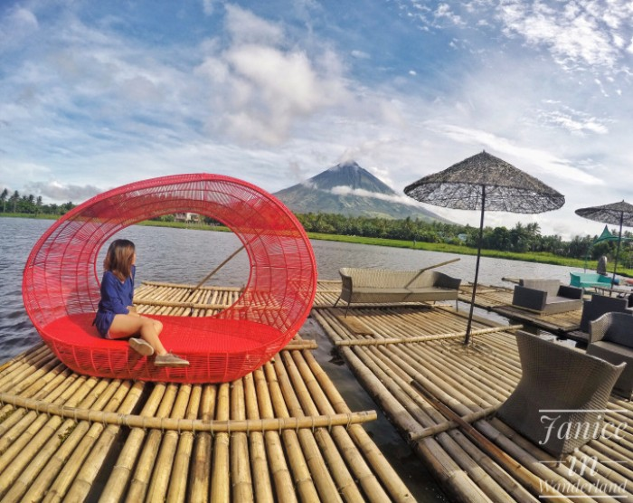

Bicol Adventure: 3 Days in Albay & Sorsogon for Less than Php4,000.00 Each
10.1.2018
Bicol, found in the southern tip of the island of Luzon, is a region comprised of 6 provinces namely Albay, Sorsogon, Masbate, Camarines Sur, Camarines Norte and Catanduanes.
Bicol Region has a lot to offer. There’s the Mayon Volcano, unspoiled beaches, lakes and old churches. Even the delicacies and the spicy dishes of Bicolanos are something to look forward to when visiting.
We only planned for Albay and Sorsogon as we only had a limited time and here’s how we explored both provinces in just three days and two nights.
After having lunch, we immediately went to Cagsawa to try the ATV adventure. The ATV has trail difficulties, too.
Unfortunately, Mayon was covered with clouds during our ATV ride. It was partly cloudy during that day. The trail was challenging because of the big rocks, flowing water and the muddy trail. I had so much fun!
We went to the Cagsawa Ruins on that day but since the volcano was still covered with clouds, we just planned to go back early in the morning to make sure that the Mayon will be visible.
We took another jeep to Daraga from Cagsawa to visit Daraga Church. I always make sure to visit a church in each place that I visit.
Daraga Church is one of the most visited churches in the Philippines and also has Mayon’s view. It is known as the our Lady of the Gate.
We woke up early to make sure we’ll be able to see the Mayon Volcano without the clouds and we didn’t fail! There’s only one group aside from us who were there. The early bird catches the worm, indeed! Haha!
We still have time to see Sumlang Lake which is just about an hour from Cagsawa. Just take a jeep going to Camalig and ask the driver to drop you at Sumlang Lake. From the main road, there’s still about 15 minutes to walk or you can just ride another tricycle, like we did.